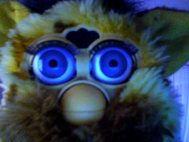
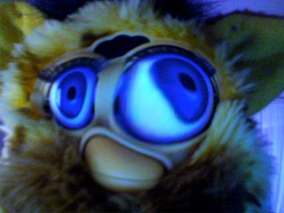
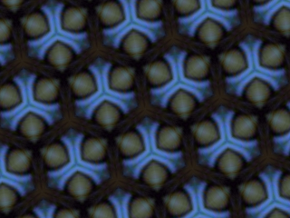

Description
The iSight library allows you to grab still images from the iSight camera, which you can then display in PlotDevice or manipulate with Core Image for example. The library is based on Axel Bauer’s isightcapture command line tool.
Download
| isight.zip (20KB) Last updated for NodeBox 1.9.0 |
Documentation
Put the isight folder in the same folder as your script so PlotDevice can find the library. You can also put it in ~/Library/Application Support/PlotDevice/.
Then you can grab an image from the camera with the following code:
isight = ximport("isight")
img = isight.grab(640, 480) # width and height are 320 x 240 by default
The return value is a path where the grabbed image is stored:
image(img, 0, 0)

So it’s easy enough to start playing with image frames from the camera in Core Image:
coreimage = ximport("coreimage")
canvas = coreimage.canvas(320, 240)
l = canvas.layer(img)
l.filter_bumpdistortion(radius=115, scale=0.85, dx=8, dy=5)
l.filter_triangletile(angle=17.43, width=84)
canvas.draw()

